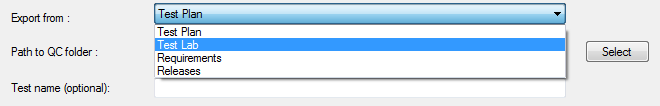
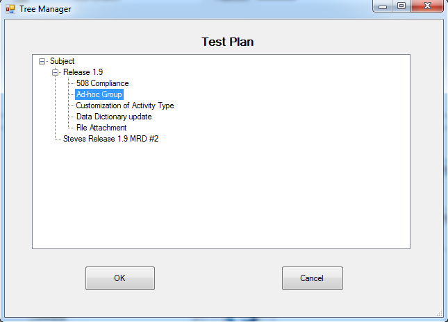

Test could be retrieved from following sources :
- Test Plan
- Test Lab
- Requirements
- Releases
(see Export from list box)

Path to QC folder - represents path to folder in Test Plan or Test Lab , path to Requirement, path to Cycle in Releases(e.g. "Subject\Release 1.9\Ad-hoc Group")
Button "Select" allows chose folder from QC tree (available only if QC connected - Connecting to Quality Center) :

Click on items in tree will display available children. Path to selected item will be transfered to main window after click on button "OK"